library(ggh4x) #> Loading required package: ggplot2
The ggh4x package defines a few new position guides that can take the place of the default x- and y-axes.
One of the simplest modifications to the axis guide is to also place ticks at places where the minor breaks are.
ggplot(mtcars, aes(wt, mpg)) + geom_point() + scale_x_continuous( minor_breaks = seq(2, 4, by = 0.2), guide = "axis_minor" )
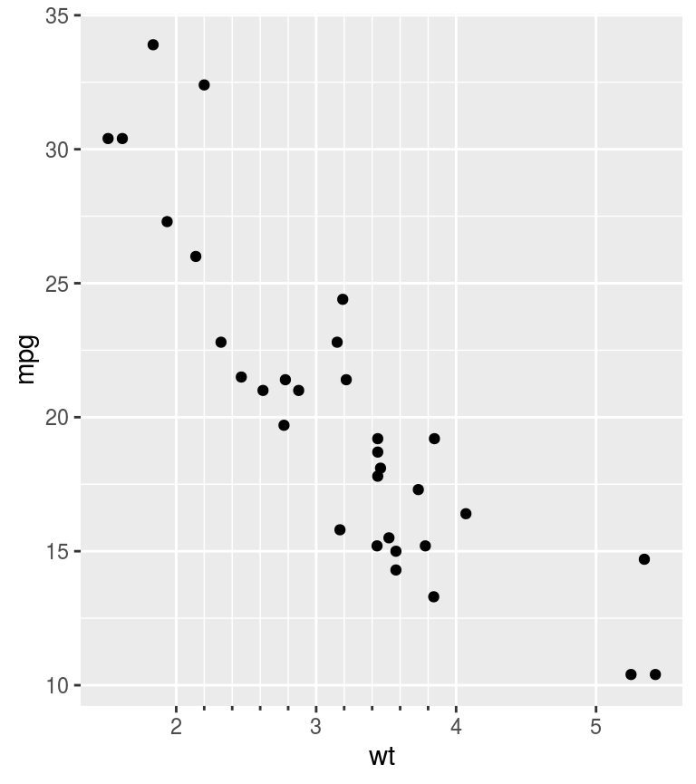
The minor ticks axis, like any position guide, can be set inside the guides() or scale_(x/y)_*() functions. They can be referred to as "axis_minor" for the default, or guide_axis_minor() if extra tweaks are required.
g <- ggplot(mtcars, aes(wt, mpg)) + geom_point() # The following are equivalent: g + guides(x = "axis_minor", y = "axis_minor") g + scale_x_continuous(guide = "axis_minor") + scale_y_continuous(guide = "axis_minor") # If you need to set extra options you can use the `guide_axis_minor()` function. g + guides(x = guide_axis_minor(angle = 45), y = guide_axis_minor(title = "I am a Y-axis")) g + scale_x_continuous(guide = guide_axis_minor(angle = 45)) + scale_y_continuous(guide = guide_axis_minor(title = "I am a Y-axis"))
The length of the minor ticks are controlled by the ggh4x.axis.ticks.length.minor theme element, and are specified relative to the major ticks.
ggplot(mtcars, aes(wt, mpg)) + geom_point() + guides(x = "axis_minor") + theme(axis.ticks.length.x = unit(0.5, "cm"), ggh4x.axis.ticks.length.minor = rel(0.5))
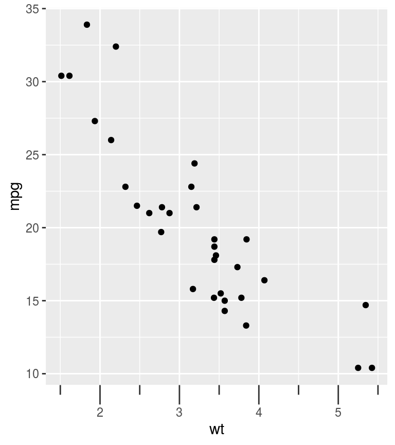
A variation on the minor ticks is placing ticks for logarithmic axes. A thing to note is that these work best log10 transformations. The ticks now come in three lengths, the major length, the minor length and what is referred to ‘mini’ length. Like with the minor ticks, the mini ticks are also defined relative to the major ticks.
ggplot(pressure, aes(temperature, pressure)) + geom_line() + scale_y_log10(guide = "axis_logticks") + theme(axis.ticks.length.y = unit(0.5, "cm"), ggh4x.axis.ticks.length.minor = rel(0.5), ggh4x.axis.ticks.length.mini = rel(0.2))
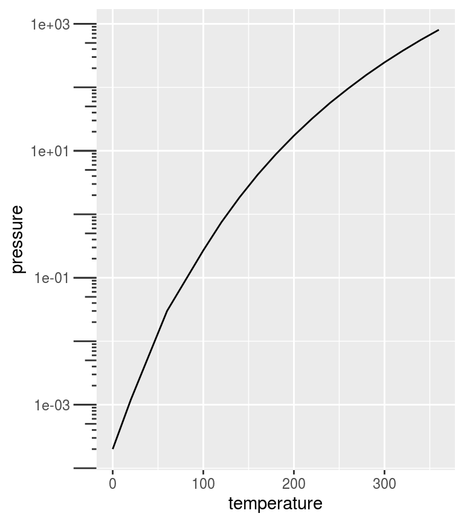
A difference with the annotation_logticks function is that by default, ticks are placed on the outside of the panel and are controlled by the theme. To get good looking log-ticks on the outside, you’d have to set clipping off and dodge the axis text. Whereas using log ticks as a guide takes care of most of the extra steps naturally.
g <- ggplot(pressure, aes(temperature, pressure)) + geom_line() # Using annotation log-ticks g + scale_y_log10() + annotation_logticks(sides = 'l', outside = TRUE) + coord_cartesian(clip = "off") + theme(axis.text.y = element_text(margin = margin(r = 10))) # Using axis_logticks, setting tick length equivalently g + scale_y_log10(guide = "axis_logticks") + theme(axis.ticks.length.y = unit(0.3, "cm"))
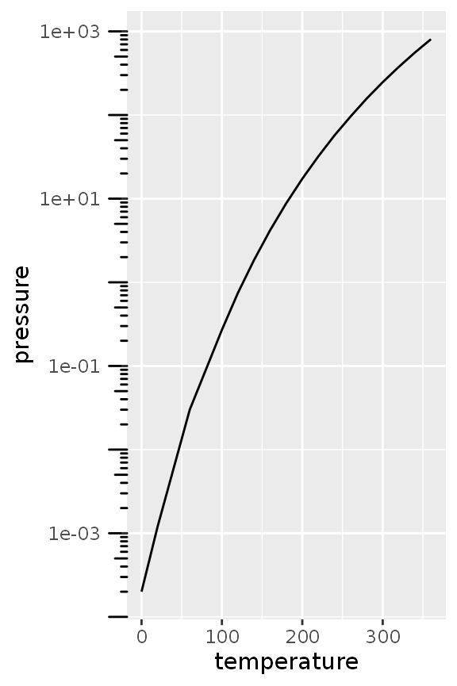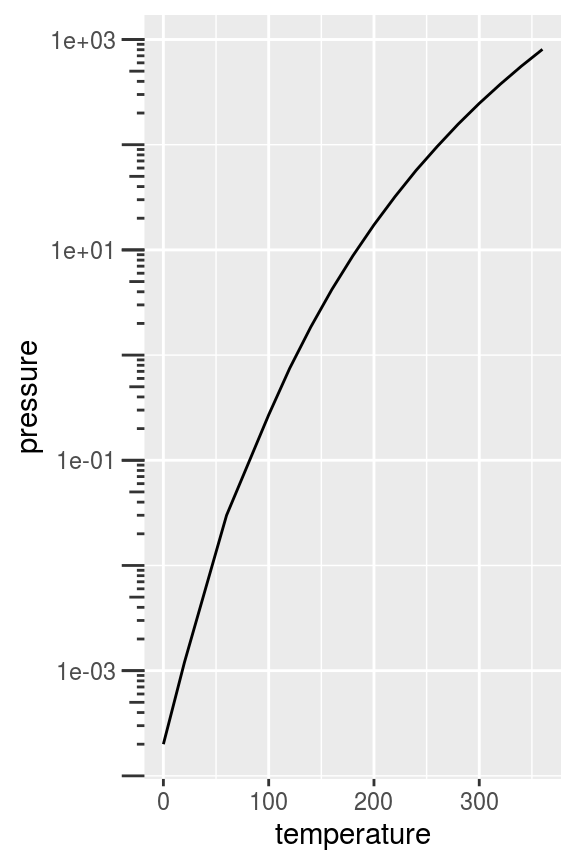
Inversely, you can also place the axis ticks on the inside with negative values for the axis.ticks.length, but you would need to dodge the axis text again.
g + scale_y_log10(guide = "axis_logticks") + theme(axis.ticks.length.y = unit(-0.3, "cm"), axis.text.y = element_text(margin = margin(r = 0.4, unit = "cm")))
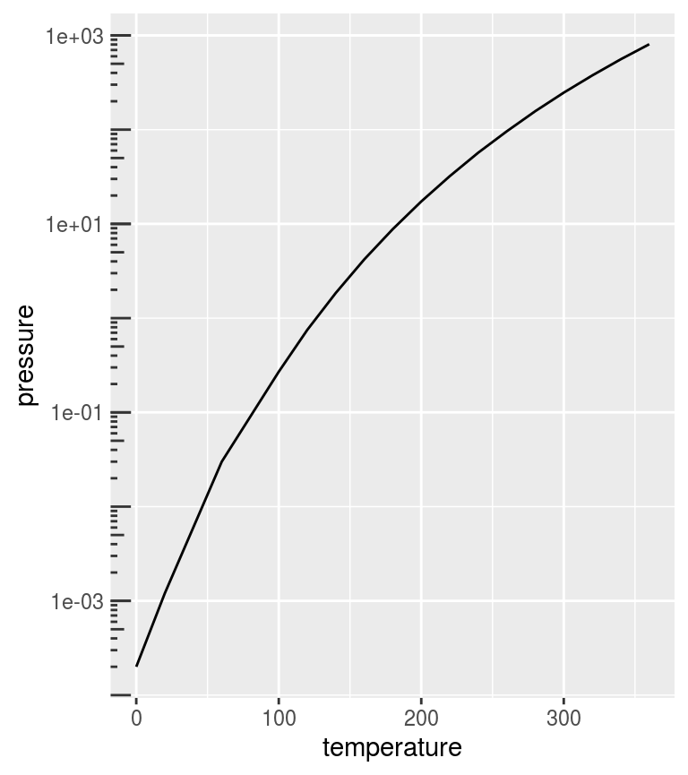
Discrete variables that have some kind of categories or interactions to them can be layed out in a nested fashion. This can be convenient to indicate for example group membership.
In the example below we use the interaction() function to paste together the name of the item and the group it belongs to, with a "." in between. The guide_axis_nested() function tries to split the labels on the "." symbol to tease apart the item and their group membership.
df <- data.frame( item = c("Coffee", "Tea", "Apple", "Pear", "Car"), type = c("Drink", "Drink", "Fruit", "Fruit", ""), amount = c(5, 1, 2, 3, 1), stringsAsFactors = FALSE ) ggplot(df, aes(interaction(item, type), amount)) + geom_col() + guides(x = "axis_nested")
Note above that the ordering of the x-axis is different than the order of the input data. An alternative that can be tried is using the paste0() function to paste together names. In the case below, the names are automatically ordered alphabetically, so the group membership information is disorganised with paste0(). Here, we use the delim argument to split the labels based on a delimiter. The extra tildes (~) are to show where the split happens.
ggplot(df, aes(paste0(item, "~nonsense~", type), amount)) + geom_col() + guides(x = guide_axis_nested(delim = "nonsense"))
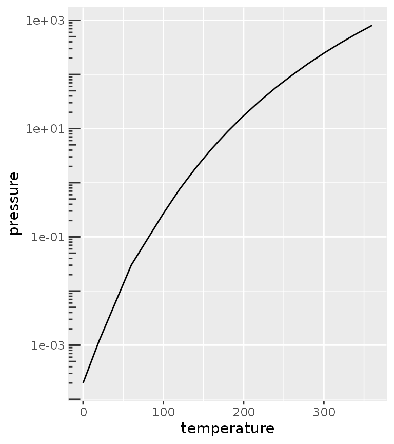
To counter some of the pains with interaction() and paste0() in ordering the items, ggh4x has the weave_factors() convenience function that attempts to preserve the natural order of factor levels in which they occur.
ggplot(df, aes(weave_factors(item, type), amount)) + geom_col() + guides(x = "axis_nested")
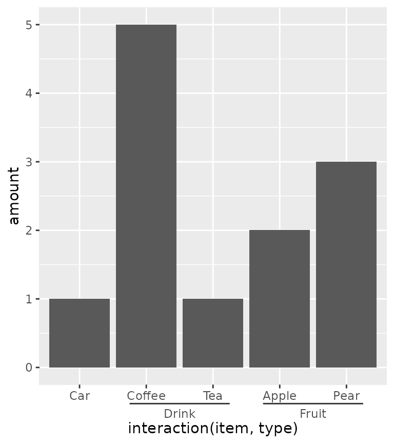
The looks of the indicator line can be controlled by the ggh4x.axis.nestline theme element (also *.x and *.y variants), which by default takes values from the axis ticks. In the example below, the indicator line is red because it takes the colour from the ticks, but is thicker because its own size is set larger. Also the text underneath the indicators can be made different with the ggh4x.axis.nesttext.(x/y) elements.
ggplot(df, aes(weave_factors(item, type), amount)) + geom_col() + guides(x = "axis_nested") + theme( axis.ticks = element_line(colour = "red"), ggh4x.axis.nestline.x = element_line(size = 2), ggh4x.axis.nesttext.x = element_text(colour = "blue") )
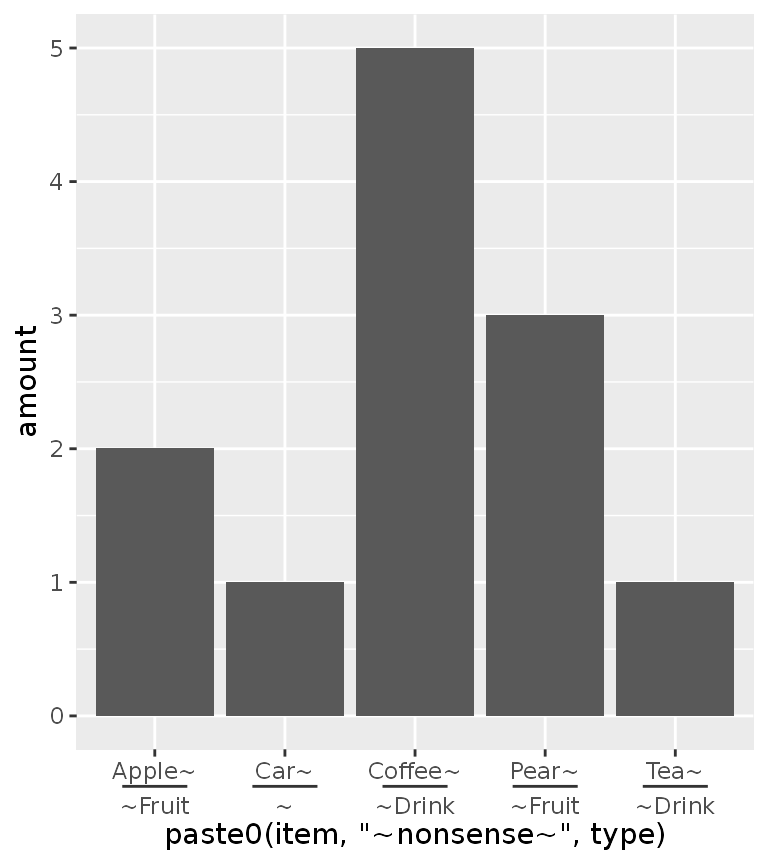
Lastly, the guide will also stack multiple group memberships.
Another thing people might want to indicate are hierarchical clustering relationships among variables. To accommodate this, there is scale_(x/y)_dendrogram(), which uses the ggdendro package convert a hclust object into a dendrogram. Since any set of scales should only be dependent on their aesthetics and cannot see other aesthetics, the dendrogram scales requires you to provide it with the result of a hierarchical clustering. By using the scale, it reorders the variables for you according to the clustering result, and places a dendrogram over the labels.
require(reshape2, quietly = TRUE) clusters <- hclust(dist(USArrests), "ave") df <- cbind(State = rownames(USArrests), USArrests) df <- reshape2::melt(df, id.vars = "State") g <- ggplot(df, aes(variable, State, fill = value)) + geom_raster() g + scale_y_dendrogram(hclust = clusters)
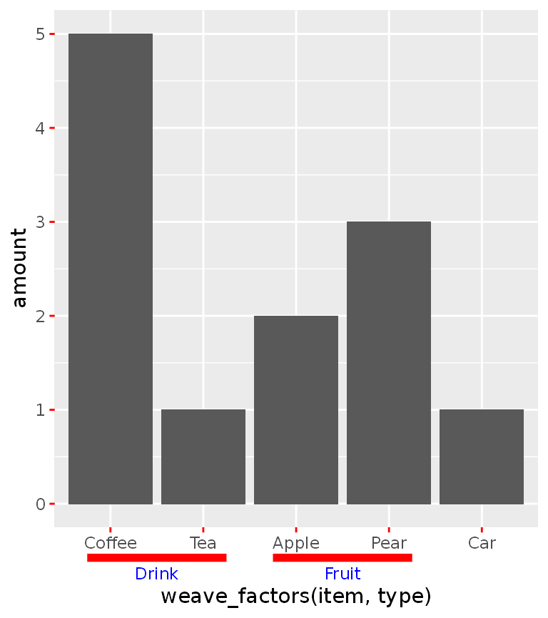
Since the dendrogram replaces the axis ticks, it uses these as theme element from which it takes the looks. The size of the dendrogram is also controlled by the tick length: it is ten times the axis.tick.length element.
g + scale_y_dendrogram(hclust = clusters) + theme( axis.ticks.y = element_line(colour = "forestgreen"), axis.ticks.length.y = unit(10, "pt") )
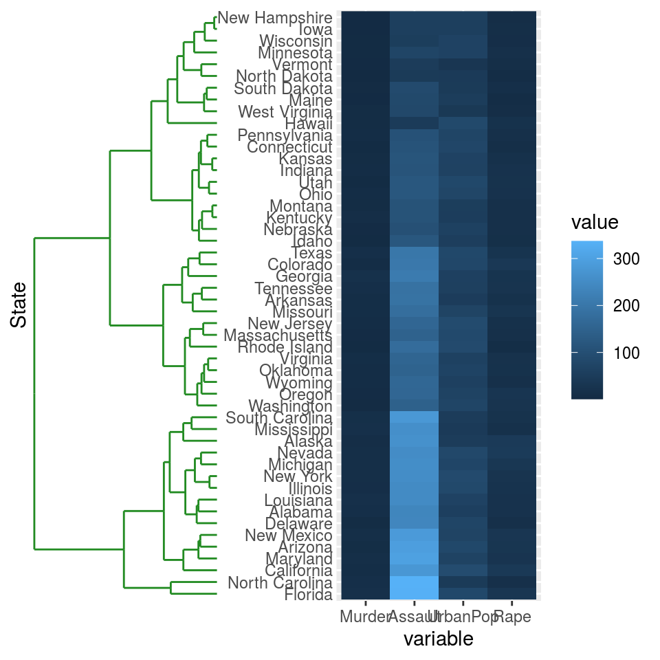
There also is the guide_dendro() function to tune some of the guide behaviour. It is intended to be used within a scale_(x/y)_dendrogram() function.
g + scale_y_dendrogram(guide = guide_dendro(position = "right"), hclust = clusters)
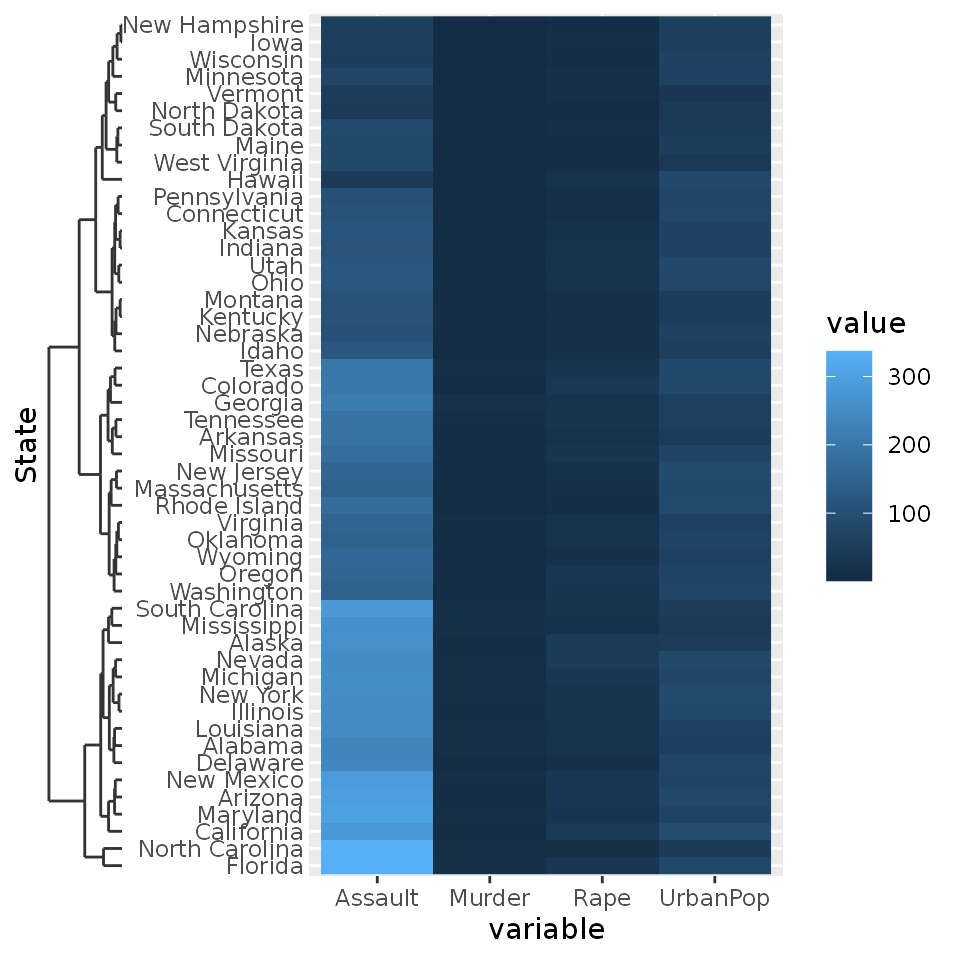
Using guide_dendro() outside dendrogram scales is not recommended, because that would break the relationship between the axis order and the dendrogram that is displayed. To discourage this use, it has been made slightly more inconvenient to use this function outside dendrogram scales: you manually have to supply the digested dendrogram. Notice below that the y-axis order and the dendrogram don’t match and is their implied relationship is thus false.
# Don't do this ggplot(df, aes(variable, State, fill = value)) + geom_raster() + guides(y = guide_dendro(dendro = ggdendro::dendro_data(clusters)))
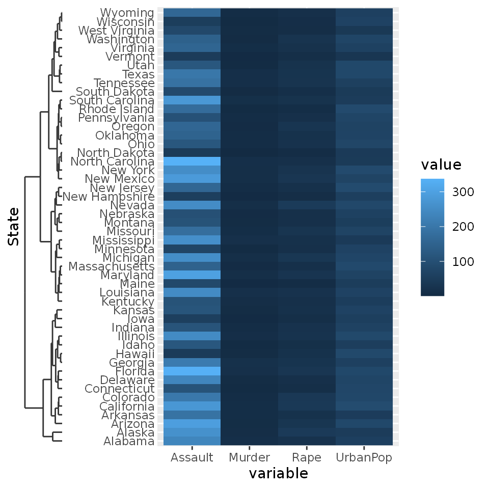